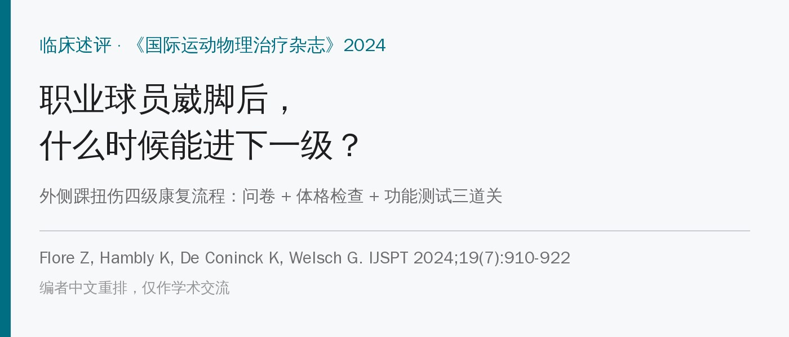
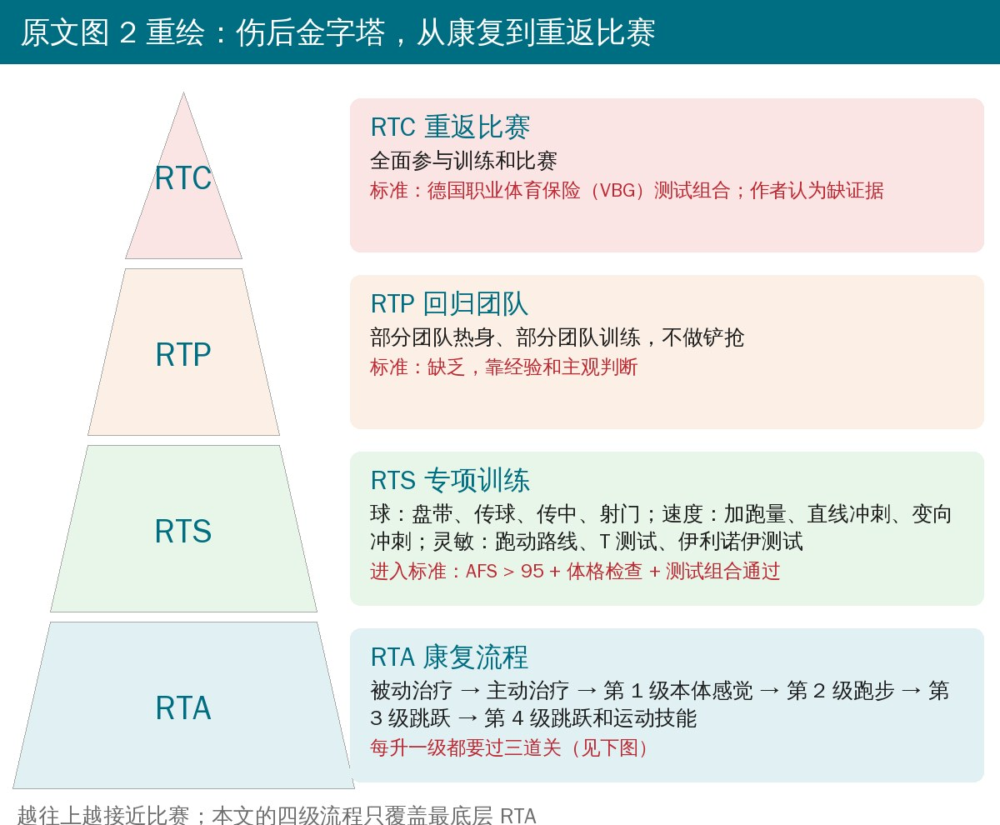
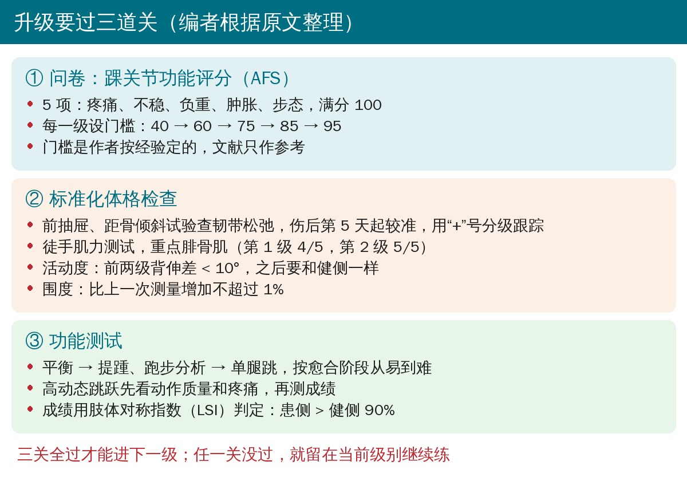
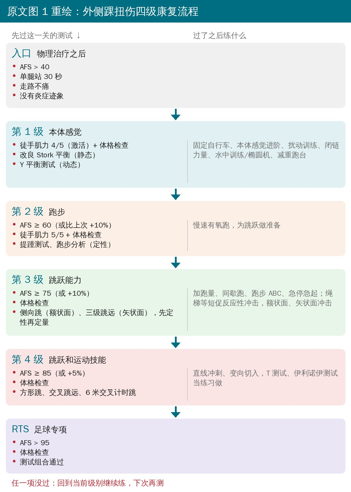
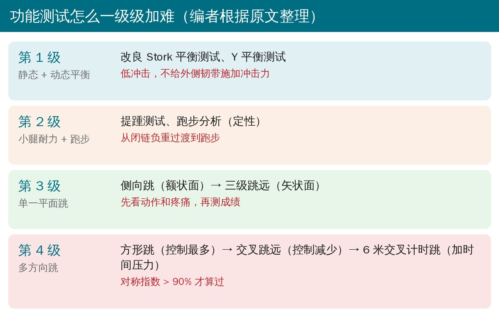
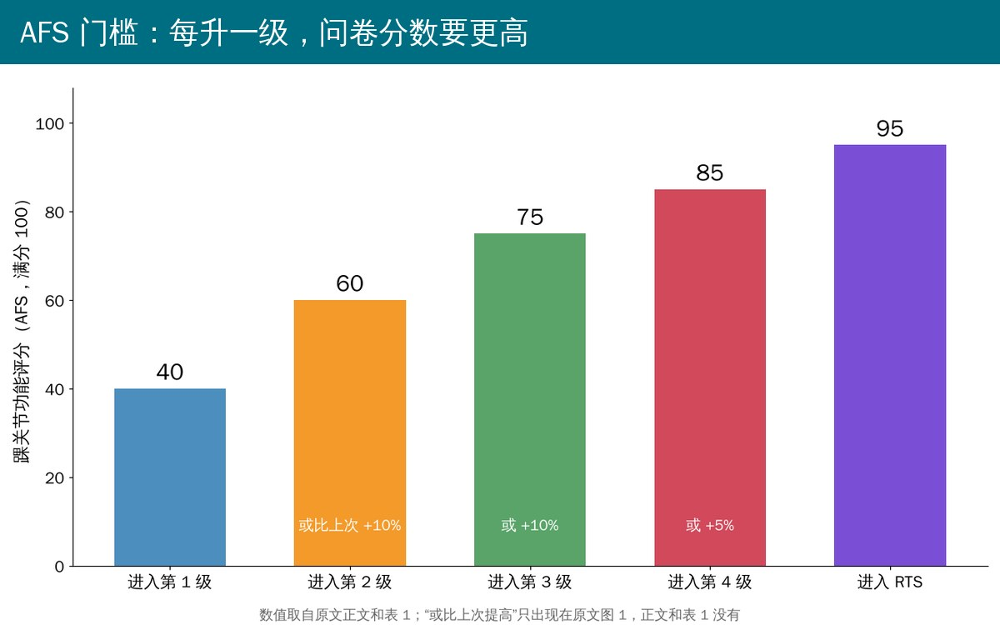
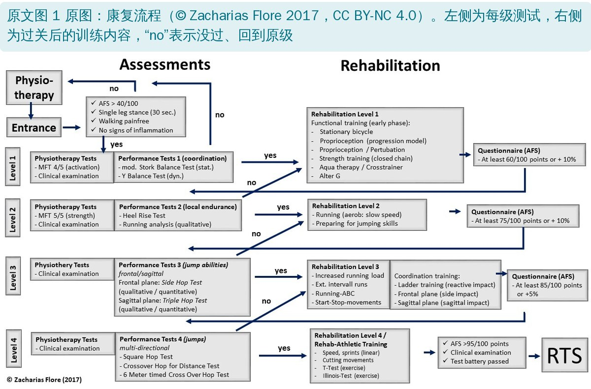

🔖原文信息（编者中文重排）
📚 文献信息
▪ Flore Z, Hambly K, De Coninck K, Welsch G. A Rehabilitation Algorithm After Lateral Ankle Sprains in Professional Football (Soccer): An Approach Based on Clinical Practice Guidelines. Int J Sports Phys Ther. 2024;19(7):910-922. doi:10.26603/001c.120205
▪ 作者来自英国肯特大学运动与运动科学学院、德国马格德堡足球俱乐部医疗部、汉堡-埃彭多夫大学医学中心
▪ 临床述评，证据等级 5 级（专家意见），没有病例数据
踝关节损伤是职业足球第三常见的伤，占全部伤病的 14%～18%；踝伤里 67%～81% 伤的是外侧韧带复合体，外侧踝扭伤是最常见的单一踝伤。
• 职业球员外侧踝扭伤后平均只缺阵 15 天，但复发率约 17%（作者团队 2022 年的荟萃分析），是所有运动伤里复发率最高的之一
• 15 天短于韧带生理愈合所需的时间，很多球员是带着没长好的韧带回场的；而过早回场正是再扭伤最重要的风险因素之一
• 最多 40% 的人会留下残余症状，发展成慢性问题
• ACL、内收肌损伤早就有按标准进阶的方案，踝扭伤康复却大多还是按天数走、凭经验；2021 版美国物理治疗协会临床实践指南也只覆盖到急性和亚急性期
所以作者在 2017 年搭了一套按标准进阶的四级康复流程，并在这篇述评里公开。目标写得很直白：让球员尽可能安全地回场，而不是尽可能快。

🔖原文图 2 的中文重绘（编者重排）
伤后到重返比赛分四个大阶段：RTA（重返活动，即康复期）→ RTS（重返运动，足球专项训练）→ RTP（重返团队训练）→ RTC（重返比赛）。这篇的四级流程只管最底层的 RTA，也是分得最细的一段，按韧带愈合的时间来排负荷。

🔖升级的三道关（编者根据原文整理）
球员在每一级都要同时通过下面三项，才能进下一级；任何一项没过就留在原级继续练。
AFS 有 5 项：疼痛、不稳、负重、肿胀、步态，满分 100 分，填得快、算得快，适合每天用。大多数问卷只在康复结束时测一次，作者把它当成过程监测工具，每一级设一道门槛：40 → 60 → 75 → 85 → 95。作者明确说，这些门槛是按自己的经验、参考文献定的。
• 前抽屉试验、距骨倾斜试验：分别查距腓前韧带和跟腓韧带。两项的特异度 0.67～1.00、敏感度 0.50～0.97，伤后第 5 天左右最准，所以作者在急性期过后、进入第 1 级时才第一次做，之后用“+”号给松弛程度分级、跟踪变化
• 徒手肌力测试：重点是腓骨肌，它对踝有保护作用。作者知道测力计更客观，但不是每个场地都有，所以用徒手测；第 1 级要求 4/5，第 2 级要求 5/5
• 活动度：伤后两周内应恢复；第 1、2 级要求背伸两侧差 < 10°，之后要和健侧一样；建议用手法治疗来恢复
• 围度：肿胀会拖累肌肉、关节和本体感觉，每次测量比上一次增加不超过 1%，用来发现训练后的刺激反应
测试按伤口愈合阶段和下一级要练的内容来排：先测“下一步要做的动作做不做得了”，再放行。高动态跳跃在第 3、4 级先定性看动作质量和疼痛反应，没问题再测成绩，避免一次测出新伤。成绩用肢体对称指数（LSI）判定：患侧达到健侧的 90% 以上才算过。

🔖原文图 1 的中文重绘；原图见文末附录
• 入口：物理治疗之后，AFS > 40、单腿站 30 秒、走路不痛、没有炎症迹象
• 第 1 级 本体感觉：过改良 Stork 平衡（静态）和 Y 平衡测试（动态）后进入；练本体感觉、闭链力量（如腓骨肌）、固定自行车、椭圆机、减重跑台，不给外侧韧带冲击力
• 第 2 级 跑步：过提踵测试（小腿力量和耐力）和定性跑步分析后进入；从直线慢跑开始，逐步提速，加入跳和弹跳的进阶
• 第 3 级 跳跃能力：过侧向跳（额状面）和三级跳远（矢状面）后进入；绳梯等短促反应性冲击、间歇跑
• 第 4 级 跳跃和运动技能：过方形跳、交叉跳远、6 米交叉计时跳后进入；冲刺、变向、多方向动作
• 进入 RTS：AFS > 95、体格检查通过、测试组合通过

🔖功能测试的难度递进（编者根据原文整理）
第 4 级的三个跳是刻意排过的：先是控制最多的方形跳，再到控制减少的交叉跳远，最后加上时间压力的 6 米交叉计时跳。跳的方向从额状面到矢状面再到多方向，作者说这是照顾最常受伤的距腓前、跟腓韧带和它们的愈合进度。
足球是用脚踢的，踢球时脚踝承受的冲击可达几千牛；疲劳时踢偏一脚，就可能把关节囊和韧带再过伸一次。作者建议先用排球、软球这类球，参考 Arundale 的间歇踢球进阶，每次练完都用体格检查看反应，对过早回到球训持保留态度。而从 RTS 到 RTP、RTC，作者承认目前没有足球专项（踢球）测试，也没有进阶标准，只能靠经验。
这是一篇述评，没有纳入病例，也没有报告复发率、缺阵天数这类结果。作者只说“早期使用证明了可行性”，没给任何数字；能不能降低复发率，要等以后的研究。全文唯一可以量化的，是各级的门槛：

🔖AFS 门槛（编者根据原文正文、表 1 和图 1 绘制）
| 指标 | 门槛 |
|---|---|
| AFS | 进入第 1～4 级、RTS：> 40 / 60 / 75 / 85 / 95 |
| 背伸活动度 | 第 1、2 级：两侧差 < 10°；之后：与健侧相同 |
| 围度 | 比上一次测量增加 ≤ 1% |
| 徒手肌力 | 第 1 级 4/5，第 2 级 5/5（只见于图 1） |
| 功能测试 | LSI > 90% |
• 证据等级 5 级：没有病例、没有对照、没有复发率数据，所谓“可行”只是作者的使用经验
• 自称“循证”，关键数字却靠经验：文中说这是一个“evidence-based concept”，但 AFS 门槛是按经验定的，测试的排列顺序是按愈合理论推出来的；作者自己也说，这些测试放在某一阶段用时的敏感度、特异度都没人评估过
• 很多测试的依据来自别的人群：单腿跳和 LSI 主要在 ACL 患者或健康人里研究过，踝伤后的 LSI 数据很少；LSI 还会低估真实差距（健侧也可能退步）
• AFS 不是为这个用途设计的：作者承认它不是专为精英足球员踝扭伤后的过程监测开发的；说它适合过程评估的依据，是一份德语专家会议资料
• 徒手肌力粗糙：4/5、5/5 容易有天花板效应，分不出职业球员需要的力量差距
• 没有时间线：全文没说走完四级通常要多久，和平均缺阵 15 天的现实怎么对接也没交代
• 提出者自己写、自己评：流程由第一作者 2017 年设计（图上标注版权），还没有独立团队验证
• AFS 门槛有两个版本：正文和表 1 只写固定分数（> 40/60/75/85/95），图 1 却写“至少 60 分或比上次提高 10%”“或 +10%”“或 +5%”，相当于没到门槛也能升级，正文没解释
• 图和表的入口条件不一样：图 1 进入第 1 级前还要单腿站 30 秒、走路不痛、无炎症，各级还有肌力 4/5、5/5 的要求；表 1 都没列，正文只说“各级有不同的力量标准”
• 补充材料编号对不上：正文说流程在补充材料 1、开发方法在补充材料 3、功能测试见补充材料 4 和 5；但文末清单里 1 是“康复描述”、3 是“流程图”、4 和 5 是 RTS 末期射门和变向的图片；表 1 标题又写“SM_ Fig. 3+4”
• 多处引用错位：说“Read 认为测试结果难以比较”引的是 52 号（Gribble 2019 踝不稳综述），Read 其实是 58 号；说用“+”号给松弛分级“类似 Johnson”引的 54 号，是侧向跳和前向跳的对比研究，和松弛分级无关；说徒手肌力是“标准等长力量测试”引的 28 号（侧向跳肌电研究）和 40 号（提踵测试）；跳跃测试的信度和特异度引了 62 号（足球员下胫腓联合损伤预测因素）
• 把跑步叫“开链”：正文说第 2 级是“从闭链训练过渡到开链跑步训练”，但跑步支撑期脚是着地的，一般不归为开链
• 一个范围混了三个指标：“患病率、发病率和复发率为 6%～41%”，看不出这个范围到底指哪一个
• 表 1 的 RTC 标签：表 1 把 RTC 一行标成“team training”，而回归团队训练是 RTP；按图 2，RTC 是全面参与训练和比赛
• 许可协议写法矛盾：原文写“Creative Commons Attribution 4.0 International License（CCBY-NC-4.0）”，前者是署名协议、后者是署名-非商业协议，链接指向的是后者
• 拼写错误较多：正文有 clinicans、lack of of、of he authors、methology、algorighm、utilzed、specifity、wth；图 1 有 Physiothery、intervall、Pertubation，图 2 有 Particpation
• 按标准升级，不按天数：每次想往上走一级，就把问卷、体格检查、功能测试三项都过一遍，哪项没过就停在原级
• 体格检查固定下来：伤后第 5 天左右开始做前抽屉和距骨倾斜并记录分级；每次量背伸角度和踝围度，围度比上次涨超过 1%，说明当天的负荷可能多了
• 功能测试按愈合顺序排：平衡 → 提踵和跑 → 单一平面跳 → 多方向跳；高动态跳先看动作和疼痛，再测成绩，LSI 以 90% 为线
• 设备不多也能做：一张问卷、量角器、卷尺、秒表和一块平地就够；没有测力计时用徒手肌力，但要知道它粗
• 回到球上先用软球：射门、长传冲击大，先用排球或软球，练完第二天看痛和肿
• 门槛是起点，不是定论：AFS 的分数线是作者经验值，非职业人群、业余球员可以按自己的情况调整，记录下来，自己积累数据
表 1 各级的进阶标准和训练内容（示例）
| 级别 | 进入这一级的标准 | 训练内容（示例） |
|---|---|---|
| 1：本体感觉 | · AFS > 40/100 · 通过体格检查 · 通过本体感觉功能测试（改良 Stork 平衡测试、Y 平衡测试） | · 负重下的本体感觉训练；按进阶模型；运用运动学习原则（如外部注意焦点） · 闭链力量训练（如腓骨肌） · 固定自行车 · 椭圆机 · 减重跑台（Alter G） |
| 2：跑步 | · AFS > 60/100 · 通过体格检查 · 通过提踵测试和定性跑步分析 | · 直线跑 · 逐步提高直线跑速度 · 单腿跳和弹跳（进阶） |
| 3：跳跃能力 | · AFS > 75/100 · 通过体格检查 · 通过跳跃测试（侧向跳、三级跳远） | · 绳梯训练（短促反应性冲击） · 大量间歇跑 |
| 4：运动技能（康复） | · AFS > 85/100 · 通过体格检查 · 通过跳跃测试（方形跳、交叉跳远、改良 6 米交叉计时跳） | · 运动技能 · 多方向动作模式 · 冲刺 |
| RTS：足球专项 | · AFS > 95/100 · 通过测试组合 | · 高强度跑 · 切入、变向 · 盘带、传球、射门，由短距离到长距离（进阶模型） |
| RTP：回归（团队训练） | · 缺乏标准；凭经验；主观 | · 回归团队训练 · 团队热身 · 无对抗的训练形式 · 不做铲抢（受保护球员） |
| RTC：团队训练（原文如此） | · VBG 测试组合 · 缺乏证据 | · 团队训练 |
每一级只列出新增的练习，之前级别的练习可以继续用。AFS：踝关节功能评分；VBG：德国职业体育保险机构。

🔖原文图 1 原图（CC BY-NC 4.0）
欢迎关注悦美力公众号，获取更多物理治疗的专业知识！
📄参考文献：
Flore Z, Hambly K, De Coninck K, Welsch G. A Rehabilitation Algorithm After Lateral Ankle Sprains in Professional Football (Soccer): An Approach Based on Clinical Practice Guidelines. Int J Sports Phys Ther. 2024;19(7):910-922. doi:10.26603/001c.120205
原文以知识共享署名—非商业性使用 4.0 协议（CC BY-NC 4.0）发表。本文为非商业学术交流用的中文解读：图 1、图 2 为编者中文重绘，三道关卡片、AFS 门槛图和功能测试进阶图为编者根据原文整理绘制，附录原图引自原文图 1，表 1 为编者翻译。版权归原作者与期刊，如有侵权请联系删除。